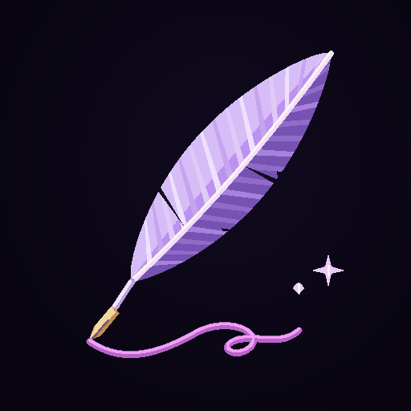
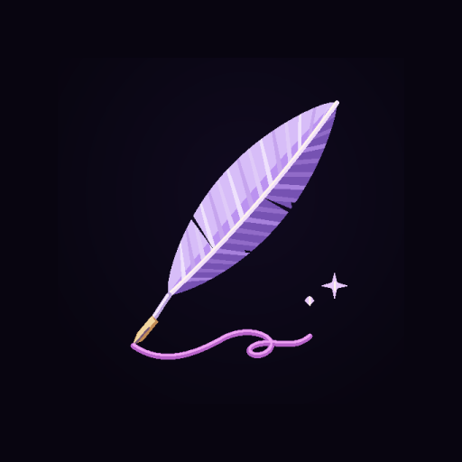

One detailed master. A violet feather, luminous spine, gold nib and pink ink flourish.


Edit pages/icons/icon-512.png in Spritewright.Run node pages/icons/generate.mjs to refresh the favicon and install icons.
pages/icons/icon-512.png
node pages/icons/generate.mjs